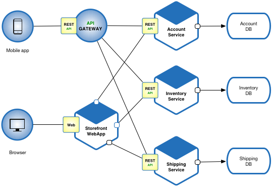
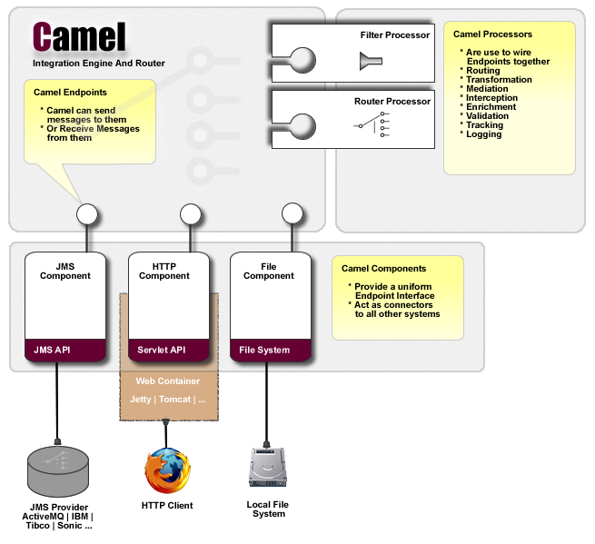

A few words About me
Education
- LCC - UADY
- MCC - ITESM
- Ph.D. - HU
Professional Career
- IT Department Manager
- University Lecturer
- IT Consultant, which means..
- Solution Architect
- Fullstack Java Dev
- Integration System Engineer
- ...
Agenda
- Motivation
- What are Microservices?
- Microservices as Enterprise Applications
- Summary
Motivation
Would it be possible for you to share something of your experience in IT?Sure, but what??
Let's take a look at Microservices 
Why?
- Not a new concept, goes back to 2005
- Attracting attention in 2011 (Netflix, Amazon)
- Aims to solve problems of monolithic apps

A MS definition by Martin Fowler:
“A particular way of designing software applications as suites of independently deployable services.”
Microservices as Enterprise Applications
Real Case Microservice SystemAn automobile company requires to migrate a monolithic legacy system. The new system should be web-based with optimized performance and highly scalable.
Master Data System
Manages all core data for the whole system.
MB Core System
Data management coming from external systems
Auth System
Authorizes and authenticates all login user requests.
Files System
Manages all kind of self generated or user-uploaded files (pdfs, tiffs, imgs, etc.)
Acme Enterprise Applications
Dept_1: Marketing System
Simple Python Web Server
Dept_2: BI System
Springboot Application Hibernate/MySQL


Dept_3: CRM System
Apache ActiveMQ System

Acme Integration System
Apache Camel EIP
Apache Camel Components
Message Route Builder
public class JmsRouteBuilder extends RouteBuilder {
@Override
public void configure() throws Exception {
from("direct:writeQueue")
.log("Getting into messaging queue")
.to("log:?level=INFO&showBody=true")
.to("activemq:queue:myTestQueue");
}
}
Camel Routes Implementation Code
Now let's see it working...
Summary
- Reuse and conquer
- Search and you will find
- Camel is funny, but at the same time challenging
- System Integration is everywhere
Thanks
Roger Castillo
twitter: @rocasespino
References
- https://martinfowler.com/articles/microservices.html
- https://articles.microservices.com/
- https://www.leanix.net/en/blog/a-brief-history-of-microservices
- http://cloudfoundry.com/
- https://netflixtechblog.com/tagged/microservices
- https://aws.amazon.com/de/microservices